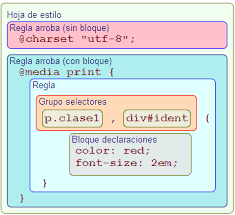

SINTAXIS Y CONCEPTO
CONCEPTO
En el codigo HTML se puede incluir una serie de etiquetas representando tanto la clase deelementos y secciones que queremos incluir como el estilo que queremos aplicar en
las mismas Sin embargo se recomienda la aplicación de herramientas de código CSS
Cordero, J. J. T. (2014). La guía definitiva del diseño web: Html, xhtml, css y herramientas de diseño. Juan Jesús Tortajada Cordero.
El padre del CSS fue el científico hakon wium liel, quien en 1994 promovio la creación de las hojas
de estilo en cascadacon el fin de crear paginas web mejor estructuradas y con una separación
mas eficientede las distintas partes que conforman la estructura de desarrollo de la web.
Cabrera, L. V. (2012). Introducción a CSS. Obtenido de https://www. cs. us. es/blogs/bd2013/files/2013/09/IntroducciónCSS. pdf.
SINTAXIS
Están formadas por:Un selector.
Una o varias parejas formadas por:
○ Un atributo.○ Valor del atributo.
El atributo y su valor están separados por dos puntos (:).
Cada pareja está separada por punto y coma (;).
Todas las parejas están encerradas entre llaves.
Las hojas de estilo no son sensibles a mayúsculas, excepto aquellas partes que no controla CSS (valores de atributos id y class, nombres de fuentes, URL…)Móvil, P. D. (2017). Introducción a CSS.

TIPOS DE SELECTORES
Selector de tipo
h1 { }
Los selectores de etiqueta, también denominados selectores de tipo, son aquellos
en los que se indica el nombre de la etiqueta HTML a la que se le asignará una propiedad CSS.
Por ejemplo, podemos aplicar un tamaño de un 1 rem y un color azul a todos los encabezados h2
Selector universal
* { }
El selector universal (*) es aquel que sirve para apuntar a todos los elementos HTML
del documento. Por ejemplo, podríamos crear una regla en la que se defina que el tamaño de
fuente de todos los elementos HTML del documento sea de 12px: Si estás comenzando a aprender CSS, puede que este selector te parezca muy útil. Sin embargo
, te recomiendo que lo utilices lo menos posible, ya que puede darte problemas a medida
que aumentan tus líneas de código CSS. En su lugar, es más adecuado que emplees selectores más específicos.
Selector de clase
.box { }
Selector de ID
#unique { }
Como ya sabes, los elementos HTML pueden tener clases o identificadores, las cuales se definen dentro
de las etiquetas HTML mediante las estructuras class=»nombre-clase» e id=»nombre-id».
La utilidad principal de las clases e identificadores es la de posibilitar la selección de elementos
concretos de HTML mediante CSS. Pongamos un ejemplo: En el anterior ejemplo, hemos asignado a todos
los párrafos la clase mi-parrafo. A continuación, hemos definido mediante CSS que todos los elementos HTML
que tengan esta clase tendrán un tamaño de 1 rem y un tipo de letra Times New Roman. Como se puede observar, el selector de clase se establece
con la nomenclatura .nombre-clase, es decir, poniendo un punto y a continuación el nombre de la clase. Por otro lado,
hemos asignado a cada uno de los párrafos un identificador. De esta manera, hemos indicado mediante CSS que el color de fuente del primer párrafo será negro,
el del segundo verde y el del tercero azul. En este caso, el selector de id se establece con la sintaxis #nombre-id, es decir, poniendo una almohadilla y a continuación el nombre del identificador.
Selector de atributo
a[title] { }
Este tipo de selectores permiten apuntar a elementos HTML que contengan un determinado atributo.
Se definen, como mínimo, definiendo entre corchetes el nombre del atributo al que queremos señalar, con la nomenclatura [nombre-atributo].
hemos establecido que todos los elementos con el atributo «href» tengan un color naranja y no tengan una decoración predefinida.
De esta manera, los tres enlaces que hemos definido adoptarían dichos estilos, ya que todos ellos tienen el atributo href.
https://carontestudio.com/blog/que-son-los-selectores-css-y-que-tipos-existen/